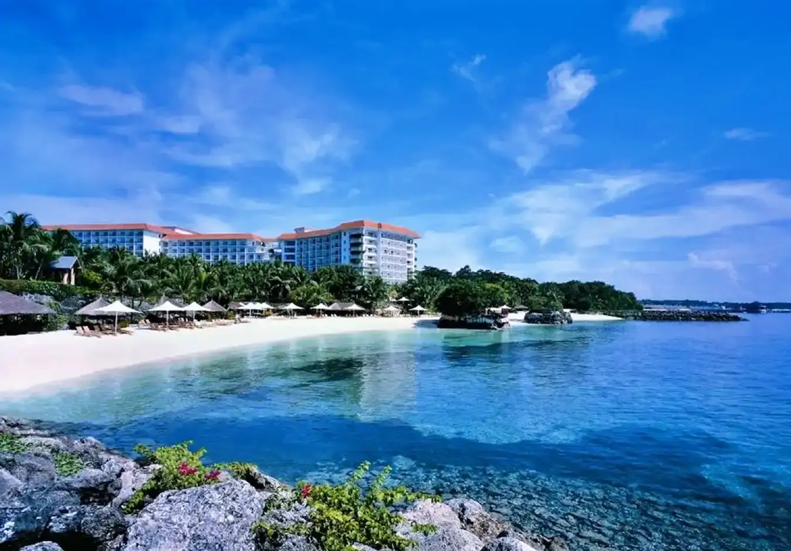

Nestled on the sun-kissed shores of Mactan Island, Lapu-Lapu City beckons travelers with its captivating blend of natural beauty and cultural charm. From pristine beaches to historical landmarks, the city offers a treasure trove of attractions just waiting to be explored.
One of the crown jewels of Lapu-Lapu City is its stunning beaches. Whether you're seeking relaxation or adventure, you'll find your paradise along the shores of Mactan. Sink your toes into the powdery white sands of Hadsan Cove Beach or bask in the serenity of Maribago Beach.
For thrill-seekers, dive into the crystal-clear waters of Olango Island and discover a vibrant underwater world teeming with marine life.
But Lapu-Lapu City is not just a haven for beach lovers—it's also a haven for history buffs. Immerse yourself in the rich tapestry of Philippine history at the Mactan Shrine, where you can pay homage to the heroism of Datu Lapu-Lapu and learn about the Battle of Mactan. Explore the ruins of Fort San Pedro, a Spanish colonial fortress dating back to the 17th century, or wander through the Lapu-Lapu City Museum and discover artifacts that tell the story of the city's past.
For those craving a taste of adventure, Lapu-Lapu City offers a myriad of thrilling activities. Embark on a island-hopping excursion and discover hidden coves and secret lagoons, or soar above the treetops on a zipline adventure at Danasan Eco Adventure Park. Dive into the depths of the ocean and explore underwater caves and coral gardens, or take to the skies on a parasailing excursion and soak in breathtaking views of the coastline.
Craving serenity? Itching for thrills? Lapu-Lapu City caters to every desire. Unveil the captivating charm of Mactan Island, where each moment brims with the chance to explore and be captivated.